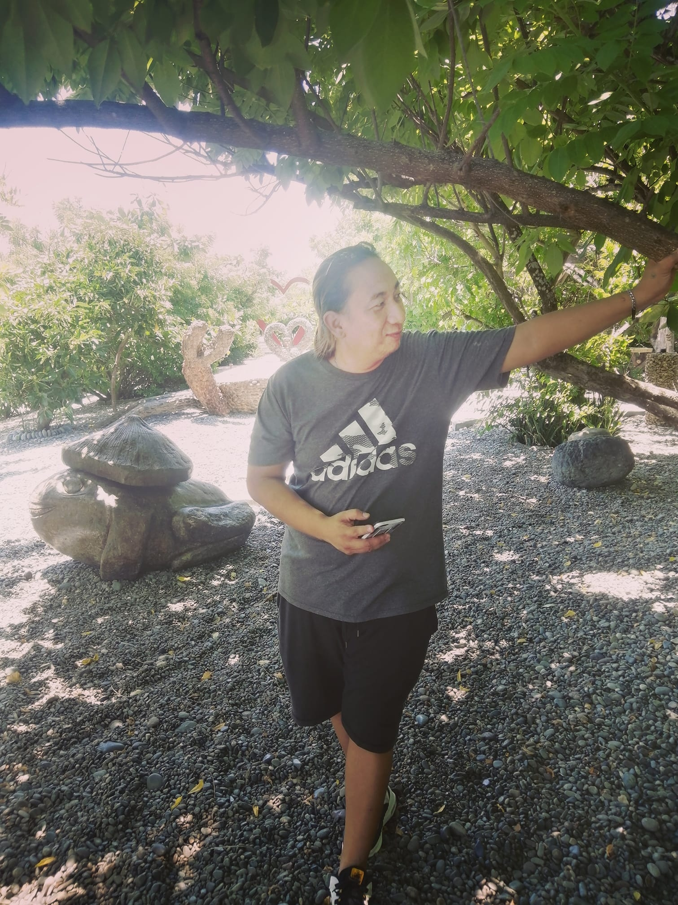
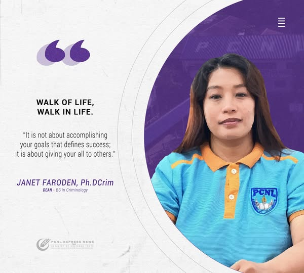

Education is a powerful tool that shapes not only individual lives but also the future of nations. In the Philippines, where the landscape of education is continually evolving, the role of teachers and instructors is more critical than ever. At the Philippine College of Northwestern Luzon (PCNL), educators are not just facilitators of knowledge; they are mentors, guides, and role models who play a pivotal role in molding the leaders of tomorrow. This essay reflects on the responsibilities, challenges, and opportunities that lie ahead for the dedicated educators at PCNL.
The Philippine College of Northwestern Luzon is positioned to be a leader in higher education, and its educators play a crucial role in this vision. By embracing a student-centered approach to teaching, instructors can create a dynamic learning environment that encourages active participation and critical thinking. Incorporating experiential learning opportunities, such as internships and community service projects, can further enrich the educational experience, allowing students to apply their knowledge in real-world contexts. Moreover, educators at PCNL have the opportunity to engage in research and contribute to the advancement of their respective fields. By fostering a culture of inquiry and exploration, teachers can inspire students to pursue their passions and contribute to the body of knowledge in their disciplines. Collaborative research initiatives can also strengthen the ties between faculty and students, creating a vibrant academic community that thrives on shared learning and discovery.
In support of it’s philosophy, PCNL mandates itself to provide advance quality instruction to it’s clientele in education, the arts and humanities, the sciences, technology, business and other related professional and technical fields; promote the advancement of knowledge through research; and help improve the quality of community life through extension work.
To be a distinct learning institution acknowledge far and wide for its innovative and flexible approaches in working with its students, stakeholders, and the community to create a more just and humane society and a more sustainable economy.
PCNL, believes in and advocates the development of man’s vast potentials which, given the appropriate quality education and provided with a stimulating and nurturant environment, shall make him emerge as a self - actualized, fully productive and responsible member of society.
BSBA Dean
BEE Dean
BSIT Dean
BSCRIM Dean
BSA Dean
President